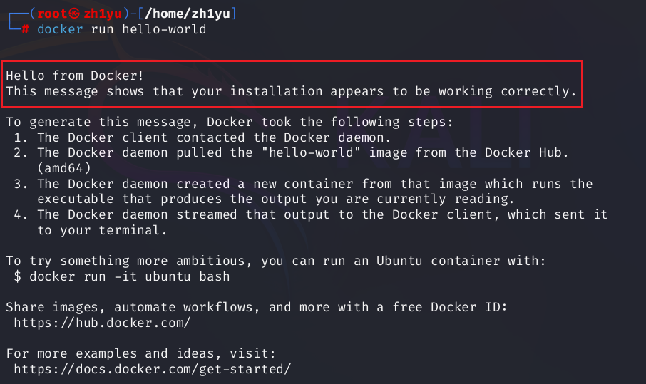
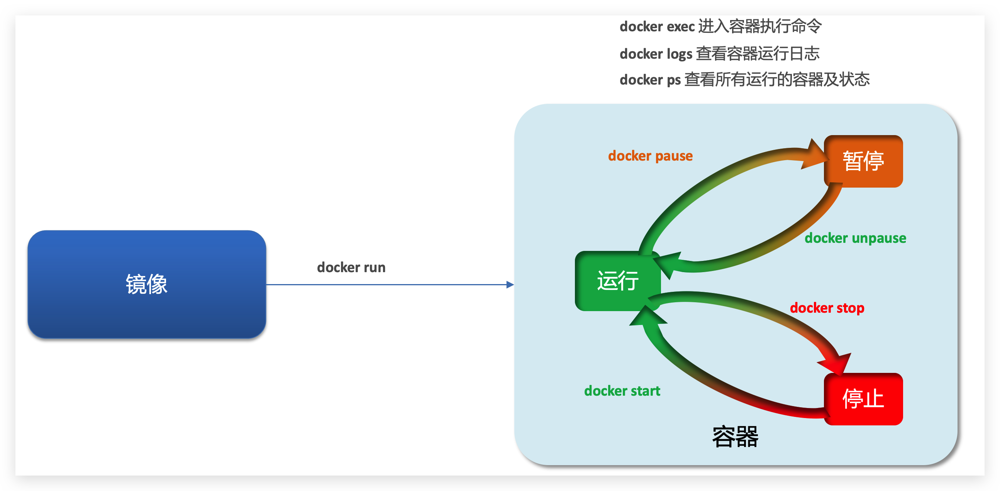

Docker 是一个开源的 容器化平台，用于快速构建、部署和运行应用程序。它允许开发者将应用及其依赖打包到一个轻量级、可移植的 容器 中，并在任何支持 Docker 的环境中运行，确保环境一致性。
Docker 的核心概念
容器：
- 轻量级虚拟化：类似于虚拟机（VM），但更轻量（共享主机 OS 内核，无需完整操作系统）。
- 隔离性：每个容器独立运行，互不影响。
- 可移植性：可在任何支持 Docker 的系统（Linux/Windows/macOS）上运行。
镜像：
- 只读模板：包含运行应用所需的代码、库、环境变量和配置文件。
- 分层存储：镜像由多层组成，可复用已有层，节省空间。
- 从 Docker Hub 获取：官方仓库（hub.docker.com）提供大量现成镜像（如
nginx, mysql, python）。
类比：
- 容器 ≈ 一辆正在行驶的汽车（运行时实例）。
- Docker ≈ 汽车制造厂 + 驾驶系统（负责造车和管车）。
- 镜像 ≈ 汽车的设计图纸（用来批量生产相同的汽车）。
Docker 的作用：
- 通过镜像打包程序及其环境。
- 通过容器运行程序（确保跨平台一致性）。
更新系统和更换源
1
2
| apt-get update
apt-get upgrade
|
如果失败，可以加入阿里云的镜像到文件/etc/apt/sources.list：
1
| echo "deb https://mirrors.aliyun.com/kali kali-rolling main non-free contrib" > /etc/apt/sources.list
|
检查内核版本
要求操作系统的内核版本高于 3.10
安装 Docker
1
| apt-get install docker.io
|
验证安装
启动docker
检查 Docker 服务状态
1
| systemctl status docker.service
|
尝试拉取镜像
然而这个命令经常会遇到超时现象，可以修改docker镜像源/etc/docker/daemon.json内容:
1
2
3
4
5
6
7
8
9
10
11
|
{"registry-mirrors": [
"https://docker.m.daocloud.io",
"https://xxxx.mirror.aliyuncs.com",
"https://registry.docker-cn.com",
"https://docker.mirrors.ustc.edu.cn",
"https://hub-mirror.c.163.com",
"https://mirror.baidubce.com"
]
}
|
其中第二个链接换成自己的阿里云加速器地址，没有可以去注册
https://cr.console.aliyun.com/cn-chengdu/instances/mirrors
然后再拉取镜像：docker pull hello-world
查看镜像：
尝试运行：

设置开机自启动
按要求运行自启动docker的命令：
1
| /usr/lib/systemd/systemd-sysv-install enable docker
|
常用命令
基础命令：
1
2
3
4
5
6
7
8
| systemctl start docker
systemctl stop docker
docker systemctl restart docker
docker systemctl enable docker
systemctl status docker
docker version
docker info
docker --help
|
镜像命令
镜像的名称一般分两部分组成：repository:tag，在没有指定tag时，默认是latest，代表最新版本的镜像。

常见的镜像操作命令如图：

1
2
3
4
5
6
7
8
9
10
11
12
13
14
15
16
17
18
19
20
21
22
23
24
25
26
| docker images #查看镜像
#从服务器拉取镜像拉取镜像
docker pull 镜像名 #拉取最新版本的镜像
docker pull 镜像名:tag #拉取镜像，指定版本
#推送镜像到服务
docker push 镜像名
docker push 镜像名:tag
docker save -o 保存的目标文件名称 镜像名 #保存镜像为一个压缩包
docker load -i 文件名 #加载压缩包为镜像
#从Docker Hub查找/搜索镜像
docker search [options] TERM
docker search -f STARS=9000 mysql #搜索stars收藏数不小于10以上的mysql镜像
#删除镜像。当前镜像没有被任何容器使用 才可以删除
docker rmi 镜像名/镜像ID #删除镜像
docker rmi -f 镜像名/镜像ID #强制删除
docker rmi -f 镜像名 镜像名 镜像名 #删除多个 其镜像ID或镜像用用空格隔开即可
docker rmi -f $(docker images -aq) #删除全部镜像，-a 意思为显示全部, -q 意思为只显示ID
docker image rm 镜像名称/镜像ID #强制删除镜像
#给镜像打标签【有时候根据业务需求 需要对一个镜像进行分类或版本迭代操作，此时就需要给镜像打上标签】
docker tag SOURCE_IMAGE[:TAG] TARGET_IMAGE[:TAG]
|
容器命令
docker容器的启动需要镜像的支持。容器操作的命令如下图：

1
2
3
4
5
6
7
8
9
10
11
12
13
14
15
16
17
18
19
20
21
22
23
24
25
26
27
28
29
30
31
32
33
34
35
| docker ps #显示正在运行的容器
docker ps -a #-a,
#容器怎么来？ docker run 创建并运行一个容器，处于运行状态。
#
docker run
docker pause 容器名/容器ID #让一个运行的容器暂停
docker unpause name #让一个容器从暂停状态恢复运行
docker stop name #停止一个运行的容器（杀死进程、回收内存，仅剩文件系统）
docker start name #让一个停止的容器再次运行
docker restart name #重启容器
#docker stop与docker kill的区别：都可以终止运行中的docker容器。类似于linux中的kill和kill -9这两个命令，docker stop与kill相似，docker kill与kill -9类似
docker kill 容器名 #杀掉一个运行中的容器
docker rename 容器名 新容器名 #更换容器名
#删除容器
docker rm 容器名/容器ID #删除容器
docker rm -f CONTAINER #强制删除
docker rm -f 容器名 容器名 容器名 #删除多个容器 空格隔开要删除的容器名或容器ID
docker rm -f $(docker ps -aq) #删除全部容器
docker logs 容器名 #查看容器运行日志
docker logs -f 容器名 #持续跟踪日志
docker logs -f
#进入容器执行命令，两种方式 docker exec 和 docker attach，推荐docker exec
#方式一 docker exec。
docker exec -it 容器名/容器ID bash
#方式二 docker attach，推荐使用docker exec
docker attach 容器名/容器ID
#从容器退到自己服务器中（不能用ctrl+C）
exit #直接退出。未添加-d(持久化运行容器)时，执行此参数 容器会被关闭
ctrl+p+q #优雅退出。无论是否添加-d参数，执行此命令容器都不会被关闭
|
参考文章：
https://cloud.tencent.com/developer/article/2393736
https://blog.csdn.net/wangzhemvp/article/details/144146671
https://blog.csdn.net/m0_53157282/article/details/133042812